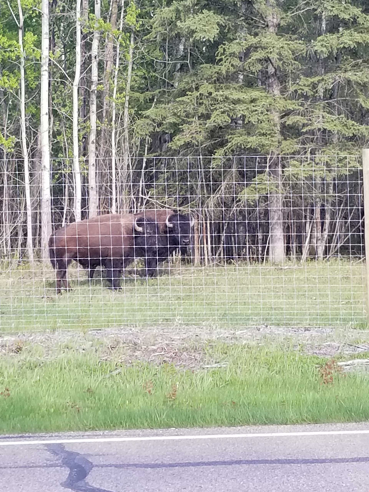
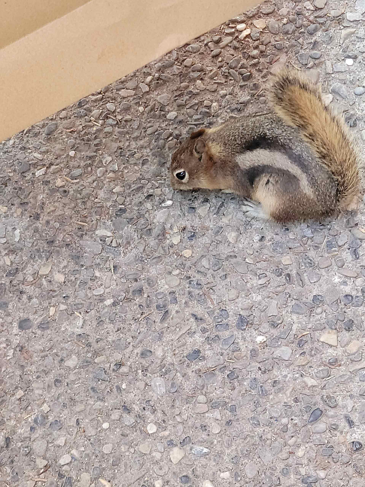

Cool stuff with Isotope

Bison

Canada
Moving to Canada is one of the best decision my family decided. The quality of life here is much better than Philippines.


Taste of St. Joes
One of the most exciting events during my high school days is the Tase of St. Joes. In this event, people from different cultures make and serve their country's tastiest foods.